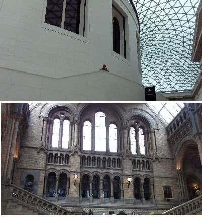

London is the capital of England and the UK and the most populous city in Europe.
Located on the banks of the Thames was founded by the Romans with the name of Londinium two thousand years ago.
It is a reference global city, finance, arts, entertainment, media, tourism, transport.
London transport is a global leader, with an extensive underground network, the oldest in Europe and a very high flow of visitors having 5 airports nearby.

It coexists a lot of people from diverse backgrounds and cultures where more than two thirds speak two or more languages.
The city has 9 million inhabitants in the center (to zone 3) and about 12 and 14 million around the London area.

The origin of the name is uncertain but London comes from the Roman Londinium and may come from the way the river.
Passing the fifth century London was abandoned and years after that became a mere Anglo-Saxon settlement with about 12,000 inhabitants.
In the tenth century London was the city largest in the island of Great Britain but was still not the capital that fell on Winchester.
In the eleventh century after the construction of Westminster Abbey London began charging relevance and consecrated as the center of national government.
After the Tower of London, Westminster Palace would be built. Around the twelfth century London would surpass 100,000.

In the sixteenth century London city would be Catholic to Protestant, Anglican in particular, religion founded by Henry VII and double the number of inhabitants due to the great immigration from Europe.
These population increases would be diminished with the plagues that beset Europe and that London would not come out unscathed.
Around 1750 Buckingham Palace would be built by King George III of that time, the residence of the present Queen of England, Elizabeth II.
In the nineteenth century, London became a benchmark of global city being the capital of the British Empire and the world's largest city, which would record until 1925 when cities
US outstrip that figure. In London the industrial revolution began building a vast network of railways managed to reduce traffic in the city.
Due to the conquests and discoveries of the British Empire have taken away a lot of jewelry, art and archaeological remains that would rise much more.
London became one of the world leaders in terms of research and science, universities were related world long before the United States, with Oxford and Cambridge to the head, which is
far from London no more than 100 miles.
Since World War II the population had decreased significantly from 9 to 7 million, but over the years its population has been increasing and in the last five years, with focus
European immigration, particularly from eastern countries like Poland following the increase in countries of the European Union ..
Londres es la capital de las finanzas Europea y lugar donde se encuentran las sedes y cuarteles centrales de los principales bancos y empresas europeas. El área central es lo que se denomina La City Su índice el FTSE100 es el que más volumen mueve de todo el continente seguid del DAX germano. En los últimos años el número de rascacielos en la City se ha incrementado notablemente. En 2007 se edificó el rascacielos conocido como El Shard, a pie de London Bridge, el más alto de Europa con 306 metros de altura y 72 plantas.


Great museums
London is the capital of the European finance and a place where the headquarters of major banks and European companies.
The central area is what is called The City, FTSE100 index is which most volume moves across the continent followed bye the German DAX.
Recently the number of skyscrapers in the City has increased significantly.
In 2007 the skyscraper known as the Shard was built, walk to London Bridge, the highest in Europe with 306 meters high and 72 floors.
 London has several architectural gems, although almost all of the last 600 years because of that fortified medieval town barely tower king and part of the wall remains.
St. Paul's Cathedral and Westminster Abbey are those part of the London charm and the famous Parliament and curious clock tower in the world and inspired several films and novels like Sherlock Holmes.
It also has magnificent famous parks in the world as Hyde Park or Regent's Park where is the London zoo and botanical park a few years ago was the best in the world.
Besides these two centuries has other buildings like Albert Hall and some other neoclassical building as the Guild Hall in the heart of London.
London has several architectural gems, although almost all of the last 600 years because of that fortified medieval town barely tower king and part of the wall remains.
St. Paul's Cathedral and Westminster Abbey are those part of the London charm and the famous Parliament and curious clock tower in the world and inspired several films and novels like Sherlock Holmes.
It also has magnificent famous parks in the world as Hyde Park or Regent's Park where is the London zoo and botanical park a few years ago was the best in the world.
Besides these two centuries has other buildings like Albert Hall and some other neoclassical building as the Guild Hall in the heart of London.
 London is home to many cultures and lifestyles, and there is great social inequality among the poorest who can work in the center but live in the suburbs and richer than even making fortunes can
not make ends meet because of the high cost of leisure in general, which can be a 500% more than a city like Madrid.
London is home to many cultures and lifestyles, and there is great social inequality among the poorest who can work in the center but live in the suburbs and richer than even making fortunes can
not make ends meet because of the high cost of leisure in general, which can be a 500% more than a city like Madrid.
But wages are not 5 times but maybe about 3 times more for the same position.
Only those who work in the City really have enough salary to afford every whim in central London, where a measly A1 renting a room of 40 square meters can be about 3000 pounds a month.
In the center inhabit different communities with different religions or social groups. The best example is Camden Town, a place full tourist district of different shops and where typical food is served from anywhere on the continent.
© 2016 - All Rights Reserved - Diseñada por Sergio López Martínez
El sitio se mantiene gracias a la publicidad, por favor Desactiva Adblock para seguir navegando
He desactivado Adblock![[Valid RSS]](https://www.onepointsync.com/wp-content/uploads/2016/08/valid-rss-rogers.png "Validate my RSS feed")